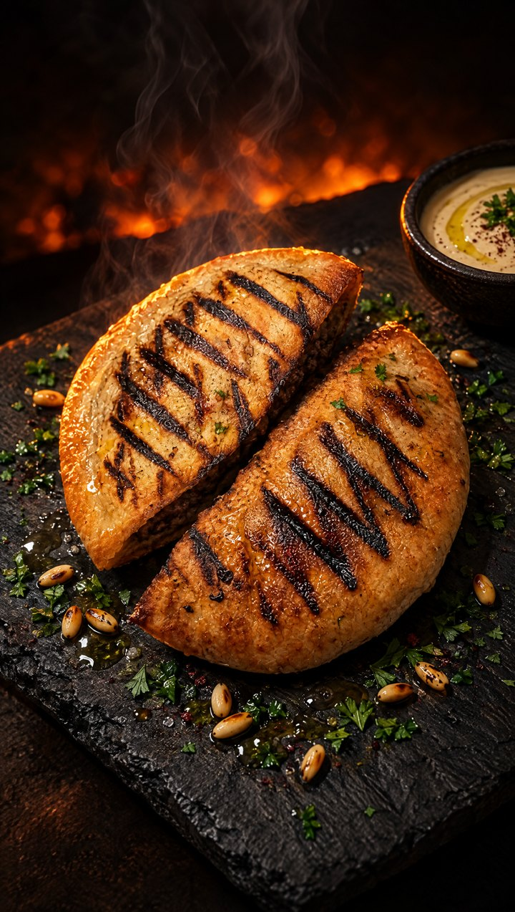
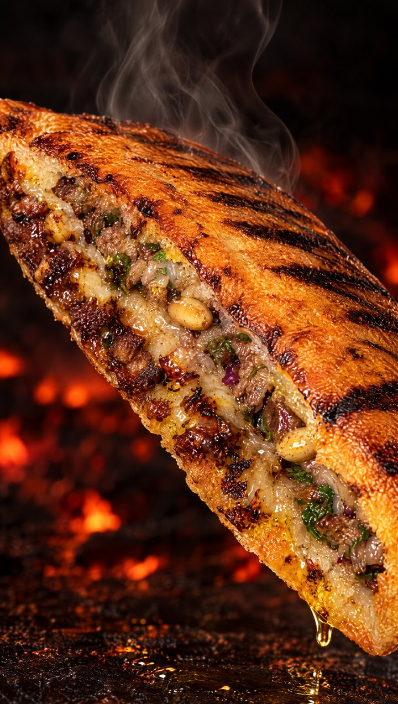
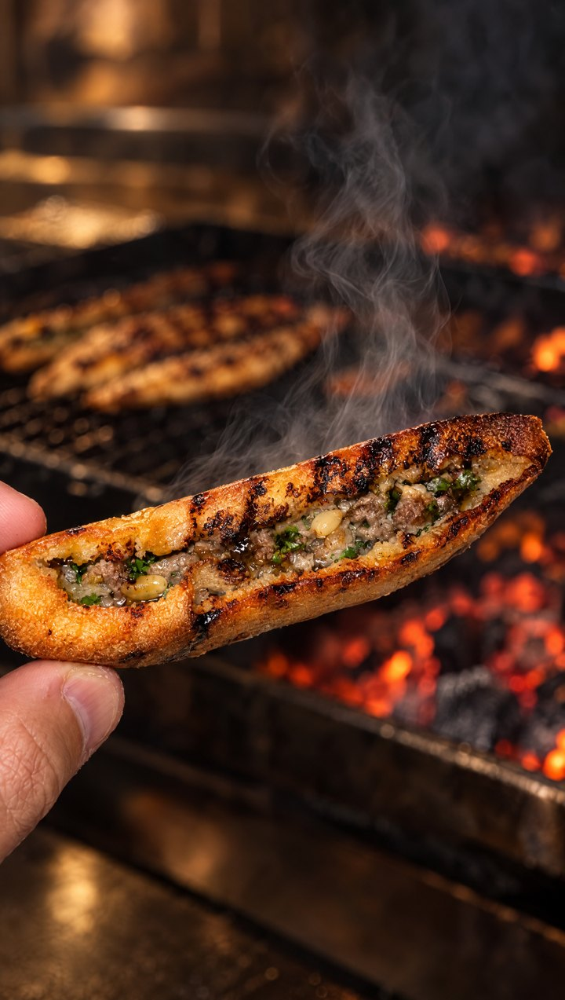

גרסה 4 אושרה. הקובץ הסופי באיכות מלאה. למטה נשארו הקולות, השוטים והתמונות מהשלבים הקודמים.
"ומשחימים משני הצדדים" בקריינות, בכיתוב ובתגית בפינה. ובלי "צלעות" בקריינות, כמו בגרסה 3. כל השאר כמו קודם.
אותו משפט בשלושה קולות. איזה מהם?
לפי סדר המתכון, 3 שניות מכל שוט, עם הסאונד. המספר בפינה הוא מספר השוט.
בלי הבקבוק, הכוסות והרקע. מהן יוצאים הפתיחה והסיום.



עמוד פרטי לבדיקה בלבד